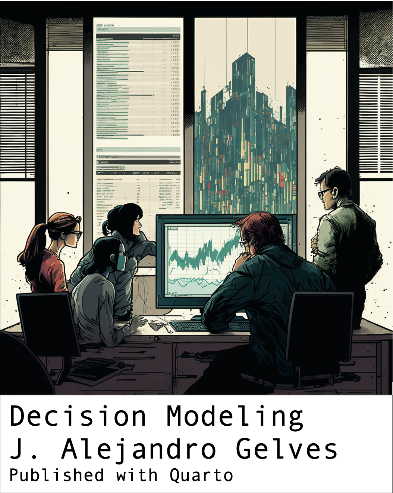

Decision Modeling
Preface

Making informed decisions is crucial in a world of uncertainty and ever-changing dynamics. This book is a guide that explores decision analysis, simulation, and time series techniques using R. It is recommended for anyone seeking to learn data-driven approaches to predict outcomes, simulate scenarios, and make informed choices.
In the book’s first part, we delve into decision analysis. Here, we explore various frameworks, such as decision trees and risk analysis, enabling us to assess our choices’ potential outcomes and consequences. We uncover strategies to quantify uncertainties, analyze trade-offs, and optimize decision paths. Real-world examples illustrate how these techniques are applied in business scenarios.
The book’s second part deals with simulation. We create dynamic, virtual environments to mimic complex systems in business and evaluate multiple scenarios. Through Monte Carlo simulation, we unlock the power to predict outcomes and quantify the impacts of our decisions. Practical exercises and step-by-step guidance equip readers with the skills to build and analyze simulations, enabling them to gain deeper insights into the consequences of their choices.
In the final part of this book, we introduce time series analysis. As time is fundamental in many domains, we explore techniques to extract meaningful patterns and forecast future values. The classical methods of ARIMA and ETS are introduced by illustrating their real-world applications in business. Readers will learn to navigate the intricacies of forecasting and leverage time series insights to enhance decision-making.
Comments are welcomed at jagelves@wm.edu.
Working with AI
You can ask an AI to solve almost every technical problem in this book. It will build the simulation, set up the optimization, run the regression, and explain the output. It will usually be right, and when it is wrong it will be wrong confidently and fluently.
That is not a reason to stop learning. It is a reason to be clear about what you are learning. The value of an analyst was never in producing the calculation. It was in knowing which calculation to produce, whether the answer can be trusted, and what to do about it. AI has made that always-true thing obvious.
This chapter describes seven skills that the assignments in this book are designed to build. They are ordered the way a real analysis moves: from a vague situation, to a model, to a defended recommendation.
1. Framing the problem
Turning a messy situation into a well-posed decision: identifying what is actually being chosen, what the objective is, which quantities are constraints and which are variables, and what can safely be left out.
This is the skill AI is worst at, because it has no way to know that the problem it was handed is the wrong one. Ask it to minimize cost and it will minimize cost. It will not stop to ask whether cost was the right objective, or whether the real constraint is a loading dock that can only handle three trucks a day. Most modeling failures in practice are not arithmetic failures. They are failures to model the right thing.
Examples.
A restaurant owner says “I’m losing money on catering.” The decision might be how to price catering, or which catering jobs to accept, or whether to exit catering, or whether to hire a second van. These are four different models with four different answers. Choosing among them is your job, not the model’s.
In the sushi problem, the decision variable is how many ounces to order. But notice what that framing assumes: one order, one day, no ability to reorder, no spoilage carryover, demand that does not respond to price. Each of those is a modeling choice you made, and each one could be relaxed. Knowing which assumptions you have quietly made is part of framing.
2. Reconciling evidence from different sources
Pulling information from several places. A data set, an industry report, a manager’s estimate, a published study. Working out what to believe when they disagree.
Real inputs conflict. Your point-of-sale data says average demand is 180 ounces; the chef says “about 200 on a good night”; a trade publication reports a category-wide decline. None of these is simply the number. Deciding what goes into the model requires judgment about how each source was produced, what it measures, and who had an incentive to shade it. An AI given three numbers will average them or pick one. Neither is analysis.
Examples.
Two forecasts of next quarter’s demand differ by 15%. Before averaging them, ask what each is conditioning on. If one assumes the new location opens on schedule and the other does not, the disagreement is not about forecasting. It is about a fact you can go check.
A survey says 60% of customers would pay more for organic ingredients. Your sales data says the organic option sells poorly. Both can be accurate. Stated preference and revealed preference routinely diverge, and knowing which one belongs in a pricing model is the whole question.
3. Directing the AI
Using AI prospectively to explore possibilities you specify rather than retrospectively, as a lookup for what has already been written.
A language model is trained on the past. Left to itself it returns the conventional treatment of a problem: the standard model, the usual assumptions, the textbook answer. That is genuinely useful, and it is also a ceiling. The interesting work is in the direction you choose to push: what if demand and price are correlated? What if we could reorder mid-week? Show me the version of this model where the constraint is labor, not inventory. The model can execute any of those. It will rarely propose them.
Examples.
Weak prompt: “How do I model inventory for a restaurant?” You get the standard newsvendor treatment. Strong prompt: “Extend the newsvendor model so that unsold inventory has 40% salvage value on the following day, and show me how the optimal order changes as salvage value goes from 0 to 100%.” Now the AI is doing work you directed.
Instead of asking for the answer, ask for the alternatives: “Give me three different ways to formulate this problem and the situations where each one is the right choice.” You are using the model to widen the option set, then choosing yourself.
4. Verifying the analysis
Auditing a result you did not produce by hand. Checking whether a constraint was silently dropped, a distribution misapplied, a sign flipped, a number invented.
AI output is fluent, and fluency reads as correctness. A simulation with a subtly wrong distribution produces a clean histogram and a plausible expected value; nothing about the output announces the error. To catch it you need enough technical fluency of your own to referee the work. This is the practical reason the mechanics in this book still matter: you cannot verify what you could not, in principle, do yourself.
Examples.
Sanity-check the extremes. If you order zero ounces, is profit zero? If you order far more than any plausible demand, does profit fall at the rate of the cost per ounce? Boundary cases are cheap to check and catch a surprising share of errors.
Check the shape, not just the number. Expected profit as a function of order quantity should rise, peak, and fall. If your grid search returns an “optimum” at the edge of the range you searched, you have almost certainly not found an optimum — you have found the end of your grid.
Recompute one cell by hand. One row of a simulation, one term of an objective function. If it matches, your confidence in the other 99,999 rows is earned rather than assumed.
5. Testing how much the answer depends on its assumptions
Asking not “what is the answer?” but “how wrong would my inputs have to be before I would change my decision?”
A point estimate is a fragile thing to hand a decision maker. What they need to know is whether the recommendation survives being wrong. Two models can produce the same optimum while one of them is flat for fifty units in either direction and the other falls off a cliff. Those are not the same recommendation, and only sensitivity analysis distinguishes them. This is also the part of an analysis that is hardest to obtain from a single prompt, because it requires knowing which assumptions are worth stressing.
Examples.
In the sushi model, the optimal order changes substantially when the cost per ounce moves from 5 to 6 to 7. That means the cost input is doing a great deal of work, and it is worth spending real effort to pin it down before committing to an order quantity.
If the expected profit at the optimum is barely higher than the expected profit twenty ounces below it, then the “optimum” is a preference, not a requirement. Say so. Operational simplicity may be worth more than the last dollar of expected profit.
6. Making the decision
Converting analysis into a choice, under uncertainty, when the analysis does not fully determine the answer.
Analysis narrows options; it rarely eliminates them. Two alternatives with nearly identical expected values may differ sharply in downside risk, reversibility, or how they interact with what the organization is already committed to. Choosing between them requires a view about risk tolerance and about what matters. Those are not properties of the data. An AI asked to decide will either pick the highest expected value or hedge. Neither is a decision; the first is a rule and the second is an evasion.
Examples.
Option A has an expected profit of $240 with a 5% chance of a serious loss. Option B has an expected profit of $232 and no realistic downside. There is no formula that settles this. It depends on whether the business can absorb the bad outcome, which is a fact about the business, not about the model.
Deciding not to decide yet is a decision, and sometimes the right one, but only if you can say what information would change your mind and what it costs to get it. “Let’s gather more data” without that is procrastination in analytical clothing.
7. Defending the recommendation
Explaining and standing behind a recommendation in front of someone who is skeptical, better informed than you about the business, and looking for the flaw.
The AI produces the analysis; a person owns the call. When a manager asks “why should I believe this?”, the answer cannot be “the model said so.” You need to be able to state your assumptions, name the weakest link in your own reasoning, and say what would have to be true for you to be wrong. Analysts who can do this get their recommendations adopted. Analysts who cannot are treated as a calculator with opinions.
Examples.
Lead with the decision and the reason, not the method: “Order 200 ounces, because expected profit is highest there and it stays within 3% of the best possible across every demand scenario we considered.” The methodology comes after, if asked.
Volunteer the weak point before it is found. “The number I am least sure about is cost per ounce; if it is closer to 7 than 5, the answer moves to 280.” This reads as competence, not doubt — and it is far better than having your audience discover it for you.
How this shows up in your work
Because AI can produce a correct final answer, the final answer is no longer sufficient evidence that you learned anything. The assignments in this book therefore ask for more than the answer:
Show the reasoning, including the wrong turns. The model you rejected and why is often worth more than the model you kept.
Expect to critique, not only to build. Some assignments hand you an analysis that is wrong in a specific, findable way and ask you to locate it.
Expect to justify assumptions. Not “I assumed demand is normal” but why that is defensible here, and what changes if it is not.
Expect to be asked what would change your mind. For any recommendation you make, be ready to name the input that would have to move, and by how much.
Using AI on this work is not cheating. Handing in something you cannot explain, verify, or defend is a different matter, and it is also, in professional terms, the fastest way to become unnecessary. The skill is not avoiding the tool. It is being the person in the room who knows whether the tool is right.